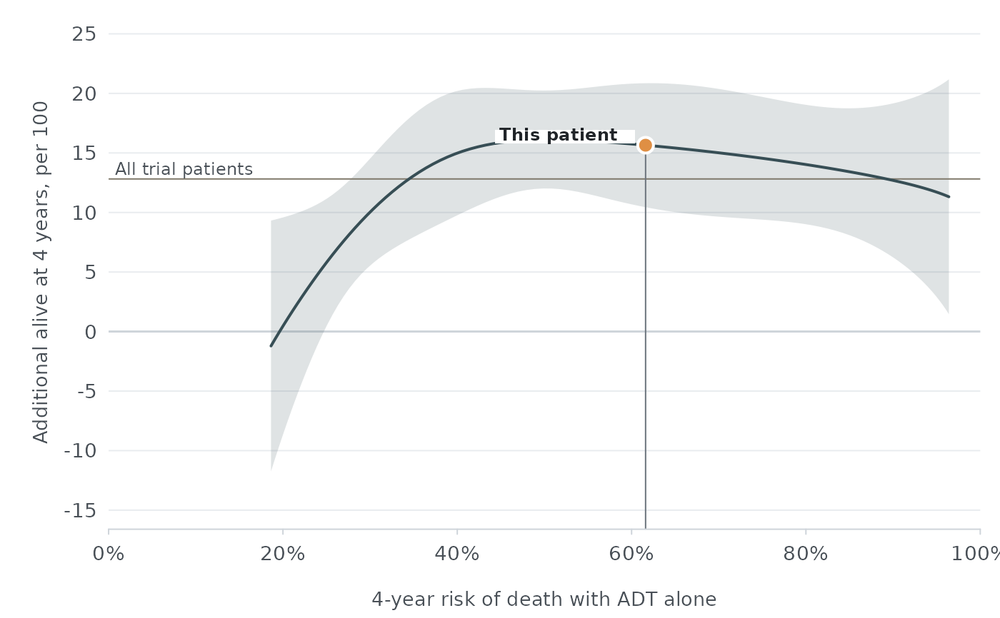

Draws the pooled treatment effect of an androgen receptor pathway inhibitor
(ARPI) plus androgen deprivation therapy (ADT) versus placebo plus ADT across
the range of baseline risk in which effects were estimated, with its 95%
confidence interval. Patients in newdata are marked at their baseline
risk.
Usage
plot_treatment_effect(
newdata = NULL,
scale = c("ard", "rmst", "hr"),
model = mhspc_model(),
show_overall = TRUE,
show_prediction_interval = FALSE
)Arguments
- newdata
Optional data frame of patients to mark; see
check_inputs()for the required columns.- scale
Effect to plot:
"ard", additional patients alive at 4 years per 100;"rmst", additional months alive over 4 years; or"hr", the hazard ratio for death on a log scale.- model
An
mhspc_modelobject frommhspc_model().- show_overall
Whether to draw the overall effect across all trial patients as a reference line.
- show_prediction_interval
Whether to draw the 95% prediction interval for a new trial population.
Examples
patient <- data.frame(
ecog_ps = 0, gleason_score = 9, visceral_metastasis = 0,
bone_metastases = 8, psa = 45, hemoglobin = 128, albumin = 41,
alp = 180, ldh = 210
)
plot_treatment_effect(patient)
